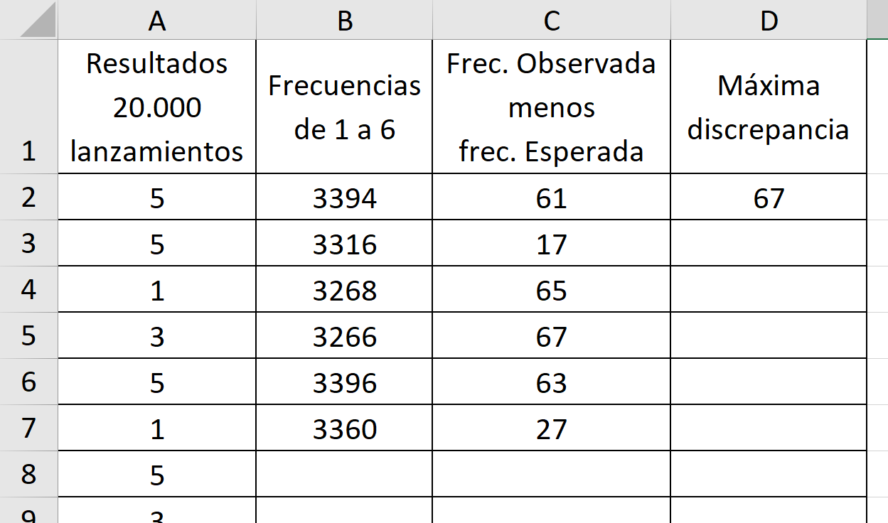
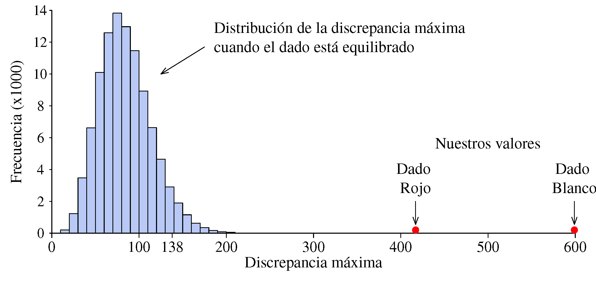
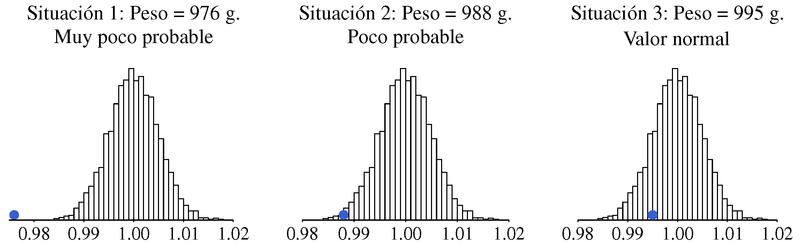
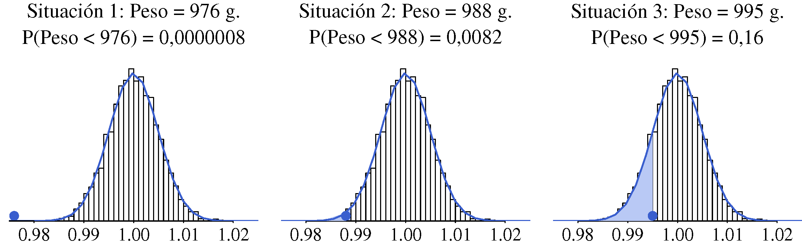
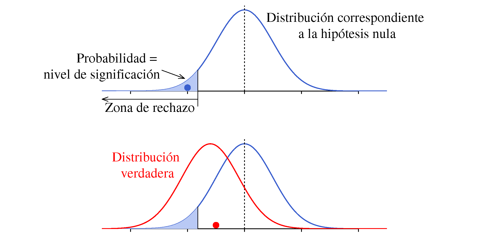

8 Contraste de hipótesis
Los test estadísticos se basan en un esquema de razonamiento llamado contraste de hipótesis. Consiste en plantear una hipótesis conservadora (hipótesis nula), por ejemplo: <“os resultados en el grupo tratado con el nuevo fármaco no son mejores que los del grupo tratado con un placebo”. Frente a ella, se plantea una hipótesis alternativa, que corresponde a lo que asumimos si los datos –la evidencia empírica– están en contradicción con la hipótesis inicial. Entendemos que existe contradicción cuando, de ser cierta la hipótesis conservadora, resultaría muy poco probable obtener unos datos como los observados.
Típicamente, este análisis consiste en realizar ciertos cálculos con los datos para obtener un número que luego se compara con los que aparecen en una tabla para llegar a lo que llamamos “\(p\)-valor”, una especie de número mágico que indica la decisión que se debe tomar. Ese \(p\)-valor también se puede obtener directamente mediante un programa informático, pero tanto si se calcula a mano o con ordenador, con frecuencia no se llega a comprender la lógica que hay detrás del proceso seguido.
En este capítulo, de una forma quizá un poco heterodoxa, vamos a ver en qué consiste esto del contraste de hipótesis.
8.1 Empezamos con un reto: Los dados de Wolf
Rudolf Wolf (1816-1893) fue un astrónomo suizo conocido por sus investigaciones sobre las manchas solares. También tenía interés –los científicos de la época solían tener una amplia gama de intereses– en el cálculo de probabilidades. Algunas fuentes1 indican que, para verificar el cumplimiento de las leyes del cálculo de probabilidades, lanzó 20;!000 veces un par de dados –uno blanco y otro rojo– obteniendo los resultados que se muestran en la Figura 8.1.

Vamos a fijarnos en los resultados obtenidos con cada dado de forma independiente. No esperamos que todos los resultados aparezcan el mismo número de veces; sabemos que si, por ejemplo, lanzamos 60 veces un dado, no necesariamente va a salir 10 veces cada uno de los resultados posibles, sino que existirá una cierta variabilidad en torno a ese 10, que es el valor teórico esperado. De la misma forma, en nuestro caso, el número de veces que saldrá cada valor estará en torno a \(3\;\!333.33\) (\(=20\;\!000/6\)). Sin embargo, al observar los totales que aparecen en la tabla, podría dar la impresión de que la variabilidad es demasiado grande.
El reto que nos planteamos es responder a la pregunta: ¿podemos afirmar que esos dados no estaban bien equilibrados?
Consideramos que los dados están equilibrados, a menos que los resultados obtenidos al lanzarlos contradigan esa suposición. Desde una perspectiva puramente matemática, es seguro que un dado real no está perfectamente equilibrado —no todos los resultados tienen exactamente la misma probabilidad de ocurrir–, pero nosotros nos situamos en el terreno de la práctica, no de los modelos teóricos.
Suponemos que el proceso de lanzamiento de los dados es correcto y que la anotación de los resultados se ha realizado sin errores. Seguramente esto es fácil si se realizan unos pocos lanzamientos, pero si se realizan \(20\;\!000\) ya no lo es tanto. En cualquier caso, si los resultados no son los esperados, vamos a atribuir esa desviación a los dados y no al proceso de lanzamiento.
8.1.1 Representación gráfica de los datos
Aunque en este caso tenemos pocos datos, siempre es una buena idea representarlos gráficamente (Figura 8.2).

Vemos que los valores 3 y 4 –especialmente el 4– aparecen claramente menos de lo previsto en ambos dados. También destaca el valor 6 del dado blanco, que aparece bastante más. El quid de la cuestión está en dilucidar si esas diferencias son fruto del azar y, por tanto, perfectamente normales o si es muy poco probable que se den por casualidad, en cuyo caso sería más razonable considerar que los dados no están equilibrados.
Aunque pueda parecer innecesario, una adecuada representación gráfica de los datos siempre ayuda a ver más claramente la información que contienen, y permiten detectar patrones o anomalías que podrían pasar desapercibidos en una tabla.
Unos opinarán una cosa y otros otra, pero ya sabemos que no necesariamente tendrá razón el que defienda su punto de vista con más vehemencia. Lo que nos interesa son argumentos –seguramente usando el lenguaje de la probabilidad– que sean convincentes. Vamos a ver como encontrar esos argumentos.
Medida de discrepancia entre resultados teóricos y observados
La Tabla 8.1 resume los valores obtenidos con cada dado y su diferencia con el valor teórico (\(=3\;\!333\)) en valor absoluto.
| Resultados | |||||||
| 1 | 2 | 3 | 4 | 5 | 6 | ||
| Dado Blanco |
Valor obtenido | 3.246 | 3.449 | 2.897 | 2.841 | 3.635 | 3.932 |
| Discrepancia | 87 | 116 | 436 | 492 | 302 | 599 | |
| |Obtenido - Teórico| | |||||||
| Dado Rojo |
Valor obtenido | 3.407 | 3.631 | 3.176 | 2.916 | 3.448 | 3.422 |
| Discrepancia | 74 | 298 | 157 | 417 | 115 | 89 | |
| |Obtenido - Teórico| | |||||||
Suma de las discrepancias en valor absoluto. En el caso del dado rojo tendremos: \(74+298+157+417+115+89 = 1\;\!150\). Es necesario realizar la suma de los valores absolutos porque si mantenemos los signos siempre dará igual a cero.
Suma de los cuadrados de las discrepancias. Elevar al cuadrado el valor de la discrepancia es otra forma de evitar que los valores positivos y negativos se anulen entre sí..
La discrepancia máxima. No hay que hacer cálculos. Para el dado rojo es 417 y para el blanco 599.
Cualquiera nos valdría, y también podemos pensar en otras que requieren más cálculos. Vamos a optar por la más sencilla: la discrepancia máxima. A esta medida le llamamos estadístico de prueba.
¿Qué valor cabe esperar del estadístico de prueba?
La discrepancia máxima es una variable aleatoria. Si lanzamos \(20\;\!000\) veces un dado perfectamente equilibrado, obtendremos un valor de esa discrepancia, pero si repetimos el experimento realizando otros \(20\;\!000\) lanzamientos, el valor será otro.
No vamos a repetir el experimento poniéndonos a lanzar dados, podemos simular los resultados que se obtendrían utilizando una hoja de cálculo como la que se muestra en la Figura 8.3. En la primera columna colocamos los resultados obtenidos al lanzar \(20\;\!000\) veces un dado =aleatorio.entre(1;6). En la segunda tenemos la frecuencia de cada uno de los valores que pueden salir =CONTAR.SI(A$2:A$20001;1). En la tercera columna calculamos la diferencia –en valor absoluto– entre la frecuencia observada y la esperada [para 1: =ABS(3333-B2). Finalmente, en la cuarta columna, determinamos el valor máximo de la discrepancia =MAX(C2:C7).

Para repetir la simulación y obtener otro valor de la discrepancia máxima, basta con pulsar F9 si se usa Excel o Ctr+R en Google Sheets. Podemos ir anotando los valores que van saliendo2. La Tabla 8.2 contiene los resultados obtenidos en tres simulaciones destacando en negrita el valor de la discrepancia máxima en cada caso.
| Simulación 1 | ||
| Res. | Frec. | Discrep. |
| 1 | 3362 | 29 |
| 2 | 3318 | 15 |
| 3 | 3326 | 7 |
| 4 | 3368 | 35 |
| 5 | 3302 | 31 |
| 6 | 3324 | 9 |
| Simulación 2 | ||
| Res. | Frec. | Discrep. |
| 1 | 3335 | 2 |
| 2 | 3388 | 55 |
| 3 | 3230 | 103 |
| 4 | 3316 | 17 |
| 5 | 3394 | 61 |
| 6 | 3337 | 4 |
| Simulación 3 | ||
| Res. | Frec. | Discrep. |
| 1 | 3340 | 7 |
| 2 | 3329 | 4 |
| 3 | 3393 | 60 |
| 4 | 3374 | 41 |
| 5 | 3273 | 60 |
| 6 | 3291 | 42 |
Pero lo más efectivo es realizar un pequeño programa que repita este proceso muchas veces guardando cada vez el valor de la discrepancia máxima. La figura \(\ref{simulaDadosWolf}\) muestra la distribución de los \(100\;\!000\) valores obtenidos al repetir la simulación ese número de veces. Valores como 65, 120 o 97 son perfectamente normales. Si la discrepancia máxima obtenida en el experimento realizado por Wolf fuera de ese orden de magnitud no habría nada que decir sobre la calidad del dado. Si hubiera salido del orden de 200 diríamos que es muy poco probable que la discrepancia tenga un valor tan grande, no sería un valor imposible pero sí tan poco probable que lo más razonable sería considerar que el dado no está equilibrado.
“La rareza” de un resultado lo medimos por la probabilidad de tener un valor como ese o mayor . La tabla \(\ref{percentiles}\) muestra la proporción de veces (que asimilamos a la probabilidad) que la discrepancia máxima da un valor igual o mayor a los indicados.
| Valor | Proporción de veces que es superado |
| 138 | 0,04879 |
| 164 | 0,01013 |
| 165 | 0,00961 |
| 198 | 0,00089 |
Podríamos haber fijado un valor frontera –ligado a la probabilidad de ser superado– y considerar que los dados están desequilibrados si nuestro resultado supera ese valor. De cualquier forma, en nuestro caso la discrepancia está tan claramente alejada de los valores ``normales’’ que –suponiendo que el proceso de lanzamiento era correcto– podemos asegurar que los dados no estaban equilibrados. Sin ninguna duda. (Figura \(\ref{simulaDadosWolf}\))

¿Cómo hemos razonado?
Podemos resumir el proceso seguido en los siguientes pasos:
De entrada hemos supuesto que los dados estaban equilibrados ya que entendemos que eso es lo normal. La carga de la prueba la tienen los que afirman algo singular, especial, excepcional. En este caso que los dados no estaban equilibrados.
En la jerga estadística, a la hipótesis que se supone cierta a no ser que las evidencias –los datos– estén en contradicción con ella, se denomina hipótesis nula, \(\text{H}_0\). A lo que ocurre si se rechaza la hipótesis nula se denomina hipótesis alternativa, \(\text{H}_1\).
A partir de los datos hemos calculado un valor relevante respecto al tema en discusión, en nuestro caso una medida de la discrepancia entre la frecuencia observada y la frecuencia esperada (le podríamos llamar <
>). A este valor que, de alguna manera, refleja la discrepancia de los datos con la hipótesis nula le llamamos estadístico de prueba. Hemos construido la distribución a la que debe pertenecer el estadístico de prueba si la hipótesis nula es cierta. A esta distribución le llamamos distribución de referencia.
Nos preguntamos si es razonable considerar que el estadístico de prueba pertenece a la distribución de referencia. Un forma de hacerlo es calcular la probabilidad de que en la distribución de referencia se dé un valor como el del estadístico de prueba o mayor. A esa probabilidad se le denomina \(p\)-valor. Si el \(p\)-valor es muy pequeño consideramos que los datos no son coherentes con la hipótesis nula y nos quedamos con la alternativa.
Vamos a seguir con otros ejemplos porque hay más aspectos que observar en esta forma de razonamiento.
8.2 Paquetes de café: ¿Salen con el peso correcto?
Una máquina automática llena paquetes de café y, cada cierto tiempo se pesa un paquete para verificar que se están llenando con el peso previsto. Si la desviación respecto al objetivo sobrepasa un cierto valor se para la máquina y se reajusta. La pregunta que nos hacemos es: ¿cuál debe ser el valor de la desviación a partir del cual se debe parar y reajustar la máquina?
“Ajustar” la máquina cuando en realidad ya está ajustada, no solo hace perder el tiempo sino que también aumenta la variabilidad final. Si el objetivo es llenar los paquetes con 1000 g, tomamos uno y pesa 1015, este puede ser un valor perfectamente compatible con que la máquina está bien ajustada, siendo la diferencia de 15 g debida a la variabilidad intrínseca del proceso de llenado. Sin embargo, si ignoramos esa variabilidad y entendemos esa desviación como una señal de que los paquetes se están llenando con 15 g de más, intentaremos <
Si a la salida de la máquina todos los paquetes pesaran exactamente lo mismo sería muy fácil saber si se ha producido un desajuste. Pero la realidad no es así, siempre hay variabilidad. Por eso hay que echar mano de la estadística para tomar una decisión.
Necesitamos aplicar un criterio que tenga en cuenta la variabilidad natural del peso de los paquetes. No será un criterio infalible; podrá ocurrir que el proceso se desajuste y, en una primera observación, no seamos capaces de detectarlo o que, por el contrario, consideremos que se ha desajustado cuando en realidad no lo está. No obstante, con la estadística podremos calcular los riesgos de que estos errores ocurran y veremos también cómo podemos reducirlos.
A partir del peso de un solo paquete
Para saber si el peso de un paquete está dentro de lo esperado es necesario conocer cómo se distribuyen los pesos cuando todo funciona correctamente.
Vamos a suponer que tenemos muchos datos históricos. Podemos construir un histograma con esos datos y sobre la misma escala situar el valor obtenido. Pueden darse situaciones como las que se muestran en la figura \(\ref{pesosCafe}\).

Las conclusiones en cada caso serán:
Situación 1: Es muy poco probable que el peso de un paquete sea tan bajo si se están llenando en torno al valor objetivo. Entre los \(5\;\!000\) valores con que se ha construido el histograma, no hay ninguno igual o inferior al que hemos obtenido. Lo más razonable es parar y revisar la máquina.
Situación 2: Es poco probable que el peso de un paquete sea tan bajo. Entre los \(5\;\!000\) valores históricos solo hay 35 con un peso igual o inferior. Lo más razonable también es parar y revisar la máquina.
Situación 3: Un peso como el obtenido es perfectamente normal cuando los paquetes se están llenando de forma correcta. No hay ninguna razón para parar la máquina.
Si en la variabilidad del peso influyen muchas pequeñas causas y son igualmente probables las desviaciones por exceso que por defecto, esa variabilidad seguirá el patrón de la distribución Normal. En nuestro caso también lo podemos confirmar por la forma que tiene el histograma.
A partir de los datos históricos se pueden estimar la media y la desviación típica, que resultan ser: \(\mu = 1000\) y \(\sigma = 5\). Como tenemos muchos datos, casi no habrá diferencia entre los valores estimados y los reales.
Utilizando esa distribución Normal como distribución de referencia y dado el peso de un paquete, \(X\), podemos calcular la probabilidad de tener un valor como ese o más alejado del objetivo. En las situaciones que hemos comentado tenemos:
Situación 1: \(P(X < 976) = 8 \cdot 10^{-7}\): Probabilidad muy pequeña. Es necesario ajustar la máquina.
Situación 2: \(P(X < 988) = 0.0082\). Es muy poco probable tener ese valor si la máquina está bien ajustada. Lo más razonable es considerar que no lo está.
Situación 3: \(P(X < 995) = 0.16\): No hay ninguna razón para considerar que no está bien ajustada.

Vamos a repasar el razonamiento realizado en este caso, que será el mismo que en el ejemplo anterior, insistiendo en los conceptos que ya hemos visto e introduciendo alguno nuevo.
De entrada suponemos que la máquina se mantiene ajustada (hipótesis nula). Eso es lo normal. Solo consideraremos que se ha desajustado (hipótesis alternativa) si los datos disponibles (<
> en este caso) están en contradicción con ese supuesto. Tomamos un valor (estadístico de prueba) que servirá para valorar el desajuste. En general hay que calcularlo a partir de los datos disponibles, pero en este caso es el mismo dato, tal cual. Sabemos como se distribuye ese valor cuando la hipótesis nula es cierta.
Calculamos la probabilidad (\(p\)-valor) de que si todo marcha bien se dé una distancia como la observada –o mayor– respecto al valor objetivo. Si esa probabilidad es pequeña se rechaza la hipótesis nula y nos quedamos con la alternativa.
Para automatizar la toma de decisiones, podemos fijar un valor frontera para el \(p\)-valor. Por ejemplo, si \(p\)-valor \(\leq\) 0,05 se rechaza la hipótesis nula. Esta probabilidad que fijamos como frontera entre lo “raro” y lo “normal” se llama nivel de significación y al valor de la variable que corresponde a esa probabilidad le llamamos valor crítico.
Porque cuando se construyeron las primeras tablas estadísticas , con medios de cálculo rudimentarios, se eligieron valores críticos para probabilidades que eran números redondos en nuestro sistema decimal: 0,5 %, 1 %, 5 %, 10 %. Si tuviéramos 4 dedos en cada mano, seguramente la frontera se hubiera puesto en el 4 %
Observe que, si la hipótesis nula es cierta, existe una probabilidad igual al nivel de significación de que sea <
También puede ocurrir que el proceso se haya desajustado pero el valor obtenido no llegue a la zona de rechazo (falso negativo o error tipo II). No encontrar evidencias de incumplimiento de la hipótesis nula no significa que se haya demostrado que es cierta.

Es habitual usar la analogía de un juicio para explicar el tipo de razonamiento que realizamos en el contraste de hipótesis. En un juicio, la hipótesis nula es que el acusado es inocente. Solo se le declara culpable si las pruebas o evidencias disponibles contradicen de manera clara la hipótesis de inocencia. Se le considera inocente a menos que se demuestre lo contrario, pero nunca se demuestra que es inocente. Del mismo modo, en estadística nunca demostramos que la hipótesis nula es verdadera; únicamente evaluamos si la evidencia es lo suficientemente fuerte como para rechazarla.
Nosotros descubrimos estos datos en el libro de M. G. Bulner: Principles of Statistics, Ed. Dover, 1979. La publicación original que se cita (Czuber, 1903) puede consultarse aquí, pág. 118).↩︎
Tal como se ha hecho en el Apéndice 7.B para simular el proceso de estimación del número de taxis que hay en una ciudad.↩︎